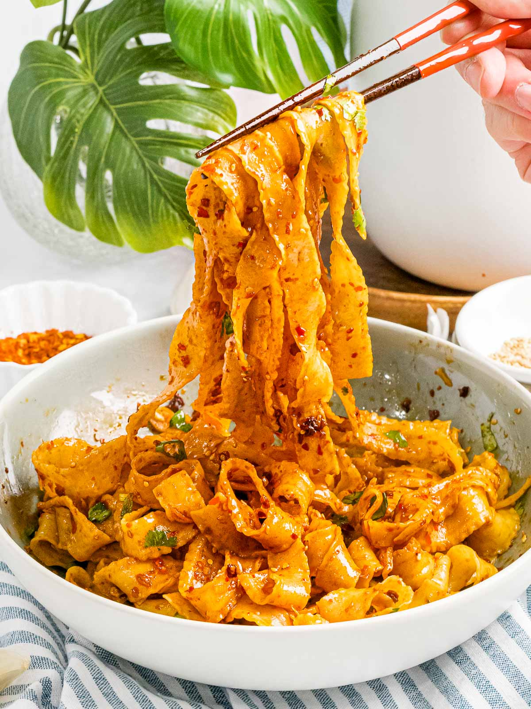

Spicy Noodles
Spicy Noodles
Autumn Squash Soup
Katsudon

These spicy Szechuan noodles with garlic chili oil are ready in only 10 minutes! Wide noodles are tossed in a spicy, garlicky Szechuan chili oil sauce made with garlic, Szechuan chili peppers, soy sauce, and fresh herbs
Ingredients:
- 7 oz Chinese noodles
- 1 green onion
- handful of cilantro
- sesame seeds
- 3 cloves garlic
- 2T Szechuan chili flakes
- 3T vegetable oil
- 1T dark soy sauce
- 3t Chinese black vingear
- 1/2t ginger
- 1/4t salt
- 3/4t sugar
Steps:
- Garlic Chili Oil: Saute garlic with vegetable oil in a small pot until it becomes fragrant, about 30 seconds. Remove from the heat and add the rest of the sauce ingredients into the pot.
- Boil noodles: Bring a large pot of water to a boil and cook your noodles according to the directions. Rinse under cold water and drain very well.
- Add sauce: Add as much of the Szechuan chili oil sauce according to your liking and spice level.
- Serve: Top with fresh cilantro, scallions, and a sprinkle of sesame seeds. Serve immediately.